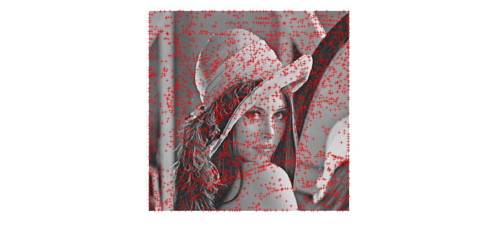
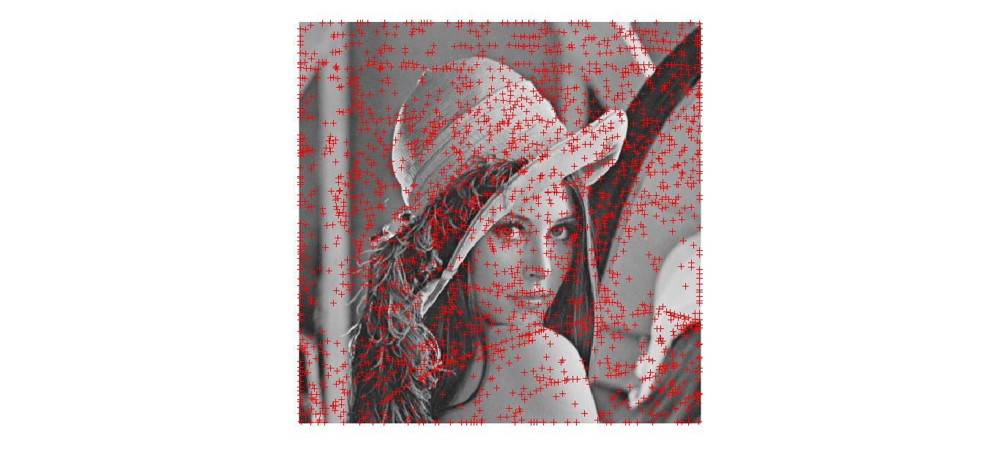

Feature Detection and Extraction using SIFT
Abstract
The scale-invariant feature transform (SIFT) is an algorithm in computer vision to detect and describe local features in images. The algorithm was patented in Canada by the University of British Columbia and published by David Lowe in 1999.
Applications include object recognition, robotic mapping and navigation, image stitching, 3D modeling, gesture recognition, video tracking, individual identification of wildlife and match moving.
1. Introduction
Matching features across different images in a common problem in computer vision. When all images are similar in nature (same scale, orientation, etc) simple corner detectors can work. But when you have images of different scales and rotations, you need to use the Scale Invariant Feature Transform.
1.1 Introduction to Problem
SIFT isn't just scale invariant. You can change the following, and still get good results:
1.Scale
2.Rotation
3.Illumination
4.Viewpoint
Here's an example. We're looking for these: And we want to find these objects in this scene:
1.Scale
2.Rotation
3.Illumination
4.Viewpoint
Here's an example. We're looking for these: And we want to find these objects in this scene:
1.2 Figure
Here's the result:
1.3 Literature Review
Object recognition is widely used in the machine vision industry
for the purposes of inspection, registration, and manipulation.
However, current commercial systems for object
recognition depend almost exclusively on correlation-based
template matching. While very effective for certain engineered
environments, where object pose and illumination
are tightly controlled, template matching becomes computationally
infeasible when object rotation, scale, illumination,
and 3D pose are allowed to vary, and even more so when
dealing with partial visibility and large model databases.
1.4 Proposed Approach
SIFT is quite an involved algorithm. It has a lot going on and can become confusing.
Here's an outline of what happens in SIFT.
1.Constructing a scale space: This is the initial preparation. You create internal representations of the original image to ensure scale invariance. This is done by generating a "scale space".
2.LoG Approximation: The Laplacian of Gaussian is great for finding interesting points (or key points) in an image. But it's computationally expensive. So we cheat and approximate it using the representation created earlier.
3.Finding keypoints: With the super fast approximation, we now try to find key points. These are maxima and minima in the Difference of Gaussian image we calculate in step 2
4.Assigning an orientation to the keypoints An orientation is calculated for each key point. Any further calculations are done relative to this orientation. This effectively cancels out the effect of orientation, making it rotation invariant.
5.Generate SIFT features: Finally, with scale and rotation invariance in place, one more representation is generated. This helps uniquely identify features. Lets say you have 50,000 features. With this representation, you can easily identify the feature you're looking for (say, a particular eye, or a sign board).
Here's an outline of what happens in SIFT.
1.Constructing a scale space: This is the initial preparation. You create internal representations of the original image to ensure scale invariance. This is done by generating a "scale space".
2.LoG Approximation: The Laplacian of Gaussian is great for finding interesting points (or key points) in an image. But it's computationally expensive. So we cheat and approximate it using the representation created earlier.
3.Finding keypoints: With the super fast approximation, we now try to find key points. These are maxima and minima in the Difference of Gaussian image we calculate in step 2
4.Assigning an orientation to the keypoints An orientation is calculated for each key point. Any further calculations are done relative to this orientation. This effectively cancels out the effect of orientation, making it rotation invariant.
5.Generate SIFT features: Finally, with scale and rotation invariance in place, one more representation is generated. This helps uniquely identify features. Lets say you have 50,000 features. With this representation, you can easily identify the feature you're looking for (say, a particular eye, or a sign board).
2. Proposed Approach
From the image above, it is obvious that we can’t use the same window to detect keypoints with different scale. It is OK with small corner. But to detect larger corners we need larger windows. For this, scale-space filtering is used. In it, Laplacian of Gaussian is found for the image with various σ values. LoG acts as a blob detector which detects blobs in various sizes due to change in σ. In short, σ acts as a scaling parameter.
But this LoG is a little costly, so SIFT algorithm uses Difference of Gaussians which is an approximation of LoG. Difference of Gaussian is obtained as the difference of Gaussian blurring of an image with two different σ, let it be σ and kσ. This process is done for different octaves of the image in Gaussian Pyramid. It is represented in below image:
 Once this DoG are found, images are searched for local extrema over scale and space. For eg, one pixel in an image is compared with its 8 neighbours as well as 9 pixels in next scale and 9 pixels in previous scales. If it is a local extrema, it is a potential keypoint. It basically means that keypoint is best represented in that scale. It is shown in below image:
Once this DoG are found, images are searched for local extrema over scale and space. For eg, one pixel in an image is compared with its 8 neighbours as well as 9 pixels in next scale and 9 pixels in previous scales. If it is a local extrema, it is a potential keypoint. It basically means that keypoint is best represented in that scale. It is shown in below image:

Once this DoG are found, images are searched for local extrema over scale and space. For eg, one pixel in an image is compared with its 8 neighbours as well as 9 pixels in next scale and 9 pixels in previous scales. If it is a local extrema, it is a potential keypoint. It basically means that keypoint is best represented in that scale. It is shown in below image:
3. Experiments & Results
3.1 Discussion
1.Original image:

2.Scale Space and DoG level1
3.Scale Space and DoG level2
4.Scale Space and DoG level3
5.Scale Space and DoG level4
6.Keypoints before elimination
7.Keypoints after elimination 
2.Scale Space and DoG level1
3.Scale Space and DoG level2
4.Scale Space and DoG level3
5.Scale Space and DoG level4
6.Keypoints before elimination
7.Keypoints after elimination 
4. Conclusions
4.1 Summary
SIFT was one of the pathbreaking discoveries in the field of computer vision as this was scale invariant. This proved to be a stepping stone for further research in the field of computer vision. Another algorithm called sift was later developed which had similar foundations but the time complexity was reduced drastically. Nowadays we have quite a lot of open source algorithms like ORB algortihms, but still they are not as good as SIFT and SURF.
Moreover the learning curve was quite steep and we learned a great deal about topics in computer vision and its signal processing applications.
Moreover the learning curve was quite steep and we learned a great deal about topics in computer vision and its signal processing applications.
4.2 Future Extensions
These algorithms can be used for applications like object tracking in videos, image segmentation, panaromic stitching, 3D scene modeling, recognition and tracking.